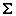

XHTML Author Mode Actions
A variety of actions are available for XHTML documents that can be found in XHTML menu, toolbar, contextual menu, and the Content Completion Assistant.
XHTML Toolbar Actions
The following default actions are available on the XHTML toolbar when editing in Author mode (by default, they are also available in the XHTML menu and some of them are in various submenus of the contextual menu):
 Bold
Bold- Changes the style of the selected text to bold by surrounding it
with the
<b>tag. You can use this action on multiple non-contiguous selections.  Italic
Italic- Changes the style of the selected text to italic by surrounding it
with
<i>tag. You can use this action on multiple non-contiguous selections.  Underline
Underline- Changes the style of the selected text to underline by surrounding
it with
<u>tag. You can use this action on multiple non-contiguous selections.  Link
Link- Inserts an
<a>element with an@hrefattribute at the cursor position. You can type the URL of the reference you want to insert or use the browsing actions in the Browse drop-down menu.
Browse drop-down menu.  Insert
Image
Insert
Image- Inserts a graphic object at the cursor position. This is done by inserting an
<img>element regardless of the current context. The following graphical formats are supported: GIF, JPG, JPEG, BMP, PNG, SVG.  Insert Media
Resource
Insert Media
Resource- Opens a Choose Media dialog box that allows you to select the URL of a media object to be inserted into a document at the cursor position. The result will be that a reference to the specified video, audio, or embedded HTML frame is inserted and rendered in Author mode so that it can be played directly from there.
- Headings Drop-down Menu
- A drop-down menu that includes actions for inserting
<h1>,<h2>,<h3>,<h4>,<h5>,<h6>elements.  Insert Paragraph
Insert Paragraph- Insert a new paragraph element at current cursor position.
- Insert Equation
- Opens the XML Fragment Editor that allows you to insert and edit MathML notations.
 Insert List Item
Insert List Item- Inserts a list item in the current list type.
 Insert Unordered
List
Insert Unordered
List- Inserts an unordered list at the cursor position. A child list item is also automatically inserted by default. You can also use this action to convert selected paragraphs or other types of lists to an unordered list.
 Insert Ordered
List
Insert Ordered
List- Inserts an ordered list at the cursor position. A child list item is also automatically inserted by default. You can also use this action to convert selected paragraphs or other types of lists to an ordered list.
 Insert a
definition list at the cursor position
Insert a
definition list at the cursor position- Inserts a definition list (
<dl>element) with one list item (a<dt>child element and a<dd>child element). You can also use this action to convert selected paragraphs or other types of lists to a definition list.  Sort
Sort- Sorts cells or list items in a table.
 Insert Table
Insert Table- Opens a dialog box that allows you to configure and insert a table. You can generate a
header and footer, set the number of rows and columns of the table and decide how the
table is framed. You can also use this action to convert selected paragraphs, lists, and
inline content (mixed content, text plus markup, that is rendered inside a block element) into a table,
with the selected content inserted in the first column, starting from the first row
after the header (if a header is inserted).Note: If the selection contains a mixture of elements that cannot be converted, you will receive an error message saying that Only lists, paragraphs, or inline content can be converted to tables.
 Insert Row
Insert Row- Inserts a new table row with empty cells below the current row. This action is available when the cursor is positioned inside a table.
- Insert Row Above
- Inserts a new table row with empty cells above the current row. This action is available when the cursor is positioned inside a table.
 Insert Column
Insert Column- Inserts a new table column with empty cells after the current column. This action is available when the cursor is positioned inside a table.
- Insert Cell
- Inserts a new empty cell depending on the current context. If the cursor is positioned between two cells, Oxygen XML Author a new cell at the cursor position. If the cursor is inside a cell, the new cell is created after the current cell.
 Delete
Column(s)
Delete
Column(s)- Deletes the table column located at the cursor position or multiple columns in a selection.
 Delete Row(s)
Delete Row(s)- Deletes the table row located at the cursor position or multiple rows in a selection.
- Join Cells
- Joins the content of the selected cells (both horizontally and vertically).
 Split Cell
Split Cell- Splits the cell at the cursor location. If Oxygen XML Author detects more than one option to split the cell, a dialog box will be displayed that allows you to select the number of rows or columns to split the cell into.
XHTML Contextual Menu Actions
The following actions are available in the contextual menu when editing in Author mode (most of them are also available in the XHTML menu at the top of the interface):
 Add File to Review
Task
Add File to Review
Task- This action can be used to add the current document to a task in the Content Fusion Tasks Manager view. Oxygen Content Fusion is a flexible, intuitive collaboration platform designed to adapt to any type of documentation review workflow. This functionality is available through a pre-installed connector add-on. To fully take advantage of all of the benefits and features of Content Fusion, your organization will need an Oxygen Content Fusion Enterprise Server. For more information, see the Oxygen Content Fusion website.
 Edit
Attributes
Edit
Attributes- Displays an in-place attributes editor that allows you to manage the attributes of an element.
- Edit Profiling Attributes
- Allows you to change the profiling attributes defined on all selected elements.
 Cut (Ctrl + X (Command + X on
OS X))
Cut (Ctrl + X (Command + X on
OS X))- Removes the currently selected content from the document and places it in the clipboard.
 Copy (Ctrl + C (Command + C on
OS X))
Copy (Ctrl + C (Command + C on
OS X))- Places a copy of the currently selected content in the clipboard.
 Paste (Ctrl + V (Command + V on
OS X))
Paste (Ctrl + V (Command + V on
OS X))- Inserts the current clipboard content into the document at the cursor position.
- Image Map Editor
- This action is available in the contextual menu when it is invoked on an image. This action applies an image map to the current image (if one does not already exist) and opens the Image Map Editor dialog box. This feature allows you to create hyperlinks in specific areas of an image that will link to various destinations.
- Insert submenu
-
This submenu includes the following insert actions:
- Insert Table
- Opens a dialog box that allows you to configure and insert a table. You can generate a
header and footer, set the number of rows and columns of the table and decide how the
table is framed. You can also use this action to convert selected paragraphs, lists, and
inline content (mixed content, text plus markup, that is rendered inside a block element) into a table,
with the selected content inserted in the first column, starting from the first row
after the header (if a header is inserted).Note: If the selection contains a mixture of elements that cannot be converted, you will receive an error message saying that Only lists, paragraphs, or inline content can be converted to tables.
- Insert
Link
- Inserts an
<a>element with an@hrefattribute at the cursor position. You can type the URL of the reference you want to insert or use the browsing actions in theBrowse
drop-down menu.  Insert Image
Insert Image- Inserts an image reference at the cursor position. Depending on the current location, an image-type element is inserted.
- Insert Media
Resource
- Opens a Choose Media dialog box that allows you to select the URL of a media object to be inserted into a document at the cursor position. The result will be that a reference to the specified video, audio, or embedded HTML frame is inserted and rendered in Author mode so that it can be played directly from there.
- Insert Equation
- Opens the XML Fragment Editor that allows you to insert and edit MathML notations.
 Insert Paragraph
Insert Paragraph- Inserts a new paragraph element at current cursor position.
- Headings Drop-down Menu
- A drop-down menu that includes actions for inserting
<h1>,<h2>,<h3>,<h4>,<h5>,<h6>elements. - Insert Entity
- Allows you to insert a predefined entity or character entity. Surrogate
character entities (range #x10000 to #x10FFFF) are also accepted. Character
entities can be entered in one of the following forms:
- #<decimal value> - e.g. #65
- &#<decimal value> - e.g. A
- #x<hexadecimal value> - e.g. #x41
- &#x<hexadecimal value> - e.g. A
- Style submenu
- This submenu includes the following text styling actions:
 Bold
Bold- Emphasizes the selected text by surrounding it with a bold tag. You can use this action on multiple non-contiguous selections.
 Italic
Italic- Emphasizes the selected text by surrounding it with an italic tag. You can use this action on multiple non-contiguous selections.
 Underline
Underline- Emphasizes the selected text by surrounding it with an underline tag. You can use this action on multiple non-contiguous selections.
 Subscript
Subscript- Surrounds the selected text with a subscript tag, used for inserting a character (number, letter, or symbol) that will appear slightly below the baseline and slightly smaller than the rest of the text.
 Superscript
Superscript- Surrounds the selected text with a superscript tag, used for inserting a character (number, letter, or symbol) that will appear slightly above the baseline and slightly smaller than the rest of the text.
- Table actions
-
The following table editing actions are available in the contextual menu when it is invoked on a table:
- Insert Rows
- Opens a dialog box that allows you to insert any number of rows and specify the position where they will be inserted (Above or Below the current row).
- Delete Row(s)
- Deletes the table row located at the cursor position or multiple rows in a selection.
- Insert Columns
- Opens a dialog box that allows you to insert any number of columns and specify the position where they will be inserted (Above or Below the current column).
- Delete
Column(s)
- Deletes the table column located at the cursor position or multiple columns in a selection.
- Join Cells
- Joins the content of the selected cells (both horizontally and vertically).
- Split Cell
- Splits the cell at the cursor location. If Oxygen XML Author detects more than one option to split the cell, a dialog box will be displayed that allows you to select the number of rows or columns to split the cell into.
- Sort
- Sorts cells or list items in a table.
 Table
Properties
Table
Properties- Opens the Table properties dialog box that allows you to configure properties of a table (such as frame borders).
- Other Actions submenu
- This submenu give you access to all the usual contextual menu actions.
- Select submenu
-
This submenu allows you to select the following:
- Element
- Selects the entire element at the current cursor position.
- Content
- Selects the entire content of the element at the current cursor position, excluding the start and end tag. Performing this action repeatedly will result in the selection of the content of the ancestor of the currently selected element content.
- Parent
- Selects the entire parent element at the current cursor position.
- Text submenu
-
This submenu contains the following actions:
- To Lower Case
- Converts the selected content to lower case characters.
- To Upper Case
- Converts the selected content to upper case characters.
- Capitalize Sentences
- Converts to upper case the first character of every selected sentence.
- Capitalize Words
- Converts to upper case the first character of every selected word.
- Count Words
- Counts the number of words and characters (no spaces) in the entire document
or in the selection for regular content and read-only content. Note: The content marked as deleted with change tracking is ignored when counting words.
- Convert Hexadecimal Sequence to Character (Ctrl + Shift + X (Command + Shift + X on OS X))
-
Converts a sequence of hexadecimal characters to the corresponding Unicode character. The action can be invoked if there is a selection containing a valid hexadecimal sequence or if the cursor is placed at the right side of a valid hexadecimal sequence. A valid hexadecimal sequence can be composed of 2 to 4 hexadecimal characters and may or may not be preceded by the
0xor0Xprefix. Examples of valid sequences and the characters they will be converted to:0x0045will be converted toE0X0125to265to2190toNote: For more information about finding the hexadecimal value of a character, see Finding the Decimal, Hexadecimal, or Character Entity Equivalent.
- Refactoring submenu
-
Contains a series of actions designed to alter the XML structure of the document:
 Toggle
Comment
Toggle
Comment- Encloses the currently selected text in an XML comment, or removes the comment if it is commented.
- Move Up (Alt + UpArrow)
- Moves the current node or selected nodes in front of the previous node.
- Move Down (Alt + DownArrow)
- Moves the current node or selected nodes after the subsequent node.
 Split
Element
(Alt + Shift + D
(Ctrl + Alt + D on OS X))
Split
Element
(Alt + Shift + D
(Ctrl + Alt + D on OS X))- Splits the content of the closest element that contains the position of the cursor. Thus, if the cursor is positioned at the beginning or at the end of the element, the newly created sibling will be empty.
 Join
Elements
Join
Elements- Joins two adjacent block elements that have the same name. The action is available only when the cursor position is between the two adjacent block elements. Also, joining two block elements can be done by pressing the Delete or Backspace keys and the cursor is positioned between the boundaries of these two elements.
- Surround with Tags (Ctrl + E (Command + E on OS X))
- Allows you to choose a tag to enclose a selected portion of content. If there is no
selection, the start and end tags are inserted at the cursor position.
- If the Position cursor between tags option is selected in the Content Completion preferences page, the cursor is placed between the start and end tag.
- If the Position cursor between tags option is not selected in the Content Completion preferences page, the cursor is placed at the end of the start tag, in an insert-attribute position.
- Surround with '[tag]' (Ctrl + ForwardSlash (Command + ForwardSlash on OS X))
- Surround the selected content with the last tag used.
 Rename
Element
Rename
Element- The element from the cursor position, and any elements with the same name, can be renamed according with the options from the Rename dialog box.
- Delete Element Tags
- Deletes the tags of the closest element that contains the position of the cursor. This operation is also executed if the start or end tags of an element are deleted by pressing the Delete or Backspace keys.
 Remove
All Markup
Remove
All Markup- Removes all the XML markup inside the selected block of content and keeps only the text content.
 Remove
Text
Remove
Text- Removes the text content of the selected block of content and keeps the markup intact with empty elements.
- Attributes Refactoring Actions
-
Contains built-in XML refactoring operations that pertain to attributes with some of the information preconfigured based upon the current context.
- Add/Change attribute
- Allows you to change the value of an attribute or insert a new one.
- Convert attribute to element
- Allows you to change an attribute into an element.
- Delete attribute
- Allows you to remove one or more attributes.
- Rename attribute
- Allows you to rename an attribute.
- Replace in attribute value
- Allows you to search for a text fragment inside an attribute value and change the fragment to a new value.
- Comments Refactoring Actions
-
Contains built-in XML refactoring operations that pertain to comments with some of the information preconfigured based upon the current context.
- Delete comments
- Allows you to delete comments found inside one or more elements.
- Elements Refactoring Actions
-
Contains built-in XML refactoring operations that pertain to elements with some of the information preconfigured based upon the current context.
- Delete element
- Allows you to delete elements.
- Delete element content
- Allows you to delete the content of elements.
- Insert element
- Allows you to insert new elements.
- Rename element
- Allows you to rename elements.
- Unwrap element
- Allows you to remove the surrounding tags of elements, while keeping the content unchanged.
- Wrap element
- Allows you to surround elements with element tags.
- Wrap element content
- Allows you to surround the content of elements with element tags.
- Fragments Refactoring Actions
-
Contains built-in XML refactoring operations that pertain to XML fragments with some of the information preconfigured based upon the current context.
- Insert XML fragment
- Allows you to insert an XML fragment.
- Replace element content with XML fragment
- Allows you to replace the content of elements with an XML fragment.
- Replace element with XML fragment
- Allows you to replace elements with an XML fragment.
- Review submenu
-
This submenu includes the following actions:
 Track Changes
Track Changes- Enables or disables the Track Changes support for the current document.
 Accept Change(s) and Move to Next
Accept Change(s) and Move to Next- Accepts the Tracked Change located at the cursor position or all of the changes in a selection and then moves to the next change. If you select a part of a deletion or insertion change, only the selected content is accepted.
 Accept All Changes
Accept All Changes- Accepts all Tracked Changes in the current document.
 Reject Change(s) and Move to Next
Reject Change(s) and Move to Next- Rejects the Tracked Change located at the cursor position or all of the changes in a selection and then moves to the next change. If you select a part of a deletion or insertion change, only the selected content is rejected.
 Reject All Changes
Reject All Changes- Rejects all Tracked Changes in the current document.
 Comment
Change
Comment
Change- Opens a dialog box that allows you to add a comment to an existing Tracked Change. The comment will appear in a callout and a tooltip when hovering over the change. If the action is selected on an existing commented change, the dialog box will allow you to edit the comment.
 Highlight
Highlight- Enables the highlighting tool that allows you to mark text in your document.
- Colors
- Allows you to select the color for highlighting text.
- Stop highlighting
- Use this action to deactivate the highlighting tool.
- Remove highlight(s)
- Use this action to remove highlighting from the document.
- Add Comment
- Inserts a comment at the cursor position. The comment appears in a callout box and a tooltip (when hovering over the change).
 Show/Edit
Comment
Show/Edit
Comment- Opens a dialog box that displays the discussion thread and allows the current user to edit comments that do not have replies. If you are not the author who inserted the original comment, the dialog box just displays the comment without the possibility of editing it.
 Remove
Comment
Remove
Comment- Removes a selected comment. If you remove a comment that contains replies, all of the replies will also be removed.
 Manage Reviews
Manage Reviews- Opens the Review view.
- Folding submenu
-
This submenu includes the following actions:
 Toggle Fold
Toggle Fold- Toggles the state of the current fold.
 Collapse Other
Folds (Ctrl + NumPad/ (Command + NumPad/ on OS X))
Collapse Other
Folds (Ctrl + NumPad/ (Command + NumPad/ on OS X))- Folds all the elements except the current element.
 Collapse Child
Folds
(Ctrl +
NumPad. (Command + NumPad. on OS X))
Collapse Child
Folds
(Ctrl +
NumPad. (Command + NumPad. on OS X))- Folds the elements indented with one level inside the current element.
- Expand Child Folds
- Unfolds all child elements of the currently selected element.
 Expand
All (Ctrl + NumPad* (Command + NumPad* on OS
X))
Expand
All (Ctrl + NumPad* (Command + NumPad* on OS
X))- Unfolds all elements in the current document.
- About Element >
 Go to
Definition
Go to
Definition -
Moves the cursor to the definition of the current element.
- Inspect Styles
- Opens the CSS Inspector view that allows you to examine the CSS rules that match the currently selected element.
- Options
- Opens the Author mode preferences page where you can configure various options with regard to the Author editing mode.
XHTML Drag/Drop (or Copy/Paste) Actions
Dragging a file from the Project view and dropping it
into an XHTML document that is edited in Author mode, creates a link
to the dragged file (the <a> element with the @href
attribute) at the drop location. Copy and paste actions work the same.
You can also drag images or media files from your system explorer or the Project view and drop them
into an XHTML document (or copy and paste). This will insert the appropriate element at the
drop or paste location (for example, dropping/pasting an image will insert the
<img> element with the @src attribute).